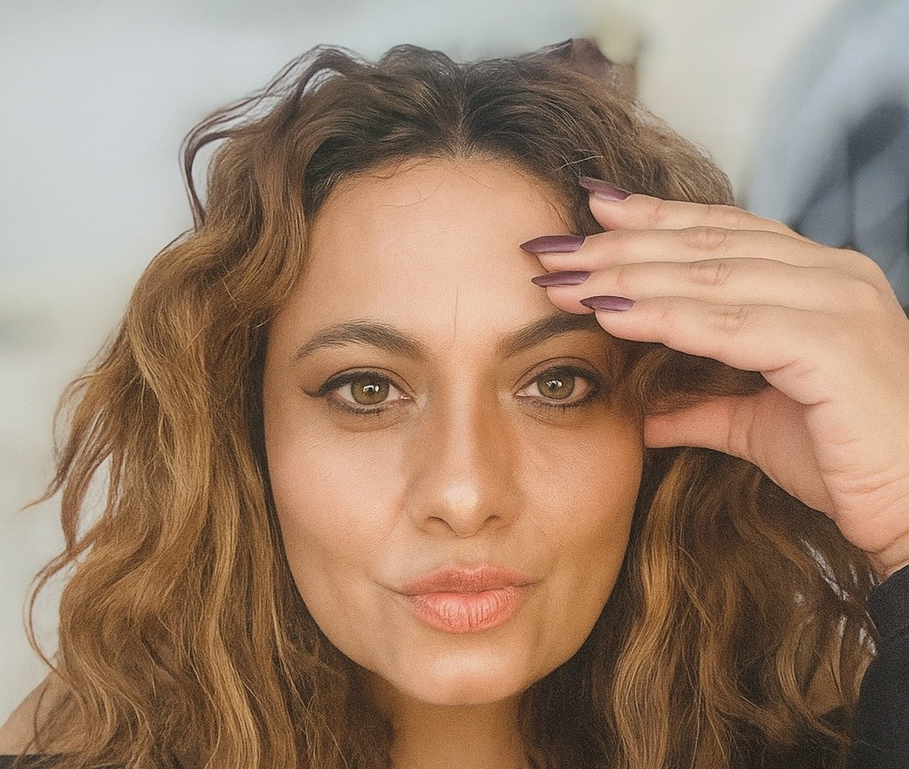
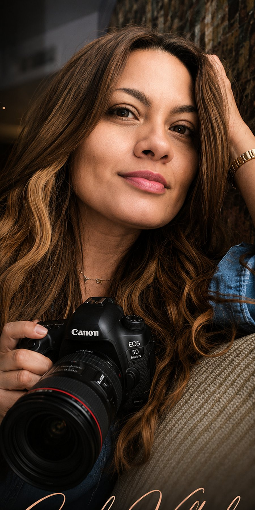

La historia detrás del lente
Sandy Valval
Fotógrafa, ex maestra de artes y sobreviviente de violencia doméstica que convirtió su historia en propósito y su cámara en herramienta de sanación.

Cómo comenzó
Nacida en Torreón, Coahuila, México, Sandy Valval estudió mercadotecnia y alguna vez tomó una clase de fotografía publicitaria, aunque en ese momento no contaba con los recursos para dedicarse a ello. Cuando migró, retomó la cámara — y hace dos años la convirtió en su propósito de tiempo completo.
Por qué mujeres
Durante doce años fue maestra de secundaria en México, dando un taller de artes conformado solo por mujeres — el inicio de su enfoque en empoderar a mujeres jóvenes en una etapa llena de incertidumbre. También trabajó en un programa de radio del gobierno enfocado en la violencia contra la mujer, donde vio de cerca el antes y el después de quienes recuperaban su fuerza. Sandy Valval es sobreviviente de violencia doméstica, y quiere ser prueba viva de que se puede salir adelante.
“Fotografiar a una mujer es conexión — retratar su esencia y su valor, dar voz a sus luchas y a sus victorias.”
No necesitas verte diferente, necesitas aprenderte a ver diferente.
Experiencia y Formación
Toda una vida de historia.
Experiencia
2 años dedicada de tiempo completo a la fotografía de retrato femenino en Phoenix, Arizona, con formación en Pul Photo Academy y una Licenciatura en Mercadotecnia que respalda su visión estratégica de marca. Miembro de la Association of International Boudoir Photographers.
Formación
Licenciatura en Mercadotecnia y estudios de fotografía en Phoenix, Arizona, en Pul Photo Academy; 12 años de docencia en artes con enfoque en empoderamiento femenino.
Especialidad
Retrato femenino, fotografía de cumpleaños y boudoir — exclusivamente para mujeres, siempre distinta a la erótica.
Detrás de Escena
Lo que puedes esperar de Sandy Valval.
Comodidad, cercanía y guía en cada paso — para que te visualices con seguridad, sin perder tu identidad.
Su filosofía
Fotografiar es conexión. Cada mujer que pasa por el estudio sale con menos inseguridades y estereotipos, y con más seguridad en su versión más natural.
Su compromiso
No hace sesiones, hace experiencias — con conexión desde antes de la cita y presencia total durante cada momento.
Trabaja con Sandy Valval